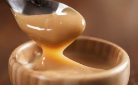
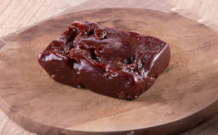

nome dado aos homens responsaveis por transportar os alimentos durante um periodo colonial.
Aqui você encontra os melhores pratos típicos mineiros. Nosso restaurante foi avaliado como “o sabor mais autêntico da tradição mineira” pelo guia gastronômico local.
Historia Do Restaurante | Sobre Comida Mineira | Nossos Contatos
Temos no nosso cardápio:
| Pratos Quentes | |||
|---|---|---|---|
|
|
Feijoada Mineira | Servida com arroz branco, farinha de mandioca e molho temperado(feito com o proprio caldo do feijão) | R$ 25,00 |
|
|
Feijão Tropeiro |
A iguaria leva farinha, ovo, carnes variadas e feijão. Conta-se que a
receita surgiu dos tropeiros, nome dado aos homens responsaveis por transportar os alimentos durante um periodo colonial. |
RS$ 40,00 |
O doce de leite é um doce muito amado pelos brasileiros e também pelos argentinos. O Dulce de Leche argentino é conhecido pela sua qualidade e sabor. No Brasil, os mineiros são famosos por fazerem doces de leite deliciosos.

Recheado com requeijão da casa, Requeijão com azeitona, Cheddar, Doce Leite ou Polenguinho.

Goiabada cascão, grelhada com catupiry, sorvete de creme, chantilly, castanha de caju, cereja e granadina.

O que dizem nossos clientes:
“A comida me lembrou o fogão a lenha da minha infância na roça. Atendimento impecável!”
— Dona Maria da Silva, cliente desde 2020.
Segunda a Sexta: 11h às 15h
Sábados: 11h às 22h
Domingos: 11h às 17h
Ficou com água na boca? Faça seu pedido online e utilize o cupom de desconto MINEIRO10 para ganhar 10% off!
Nosso restaurante atende rigorosamente às diretrizes sanitárias da ANVISA.